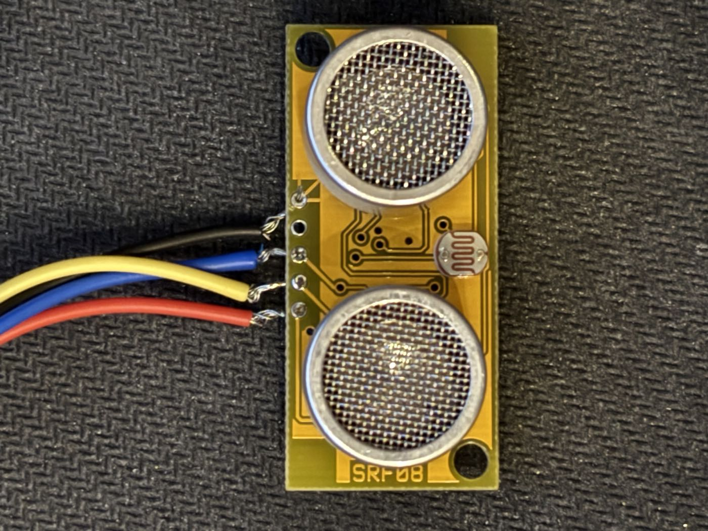
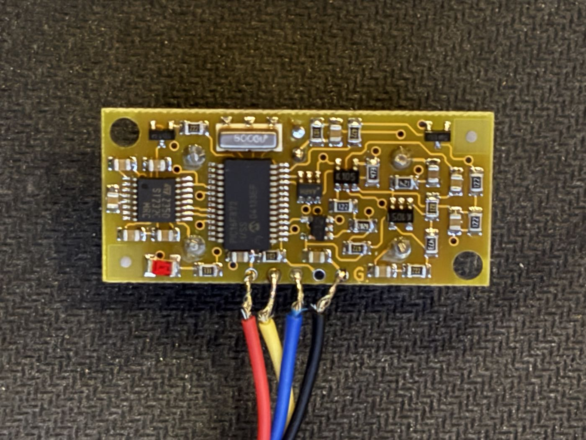
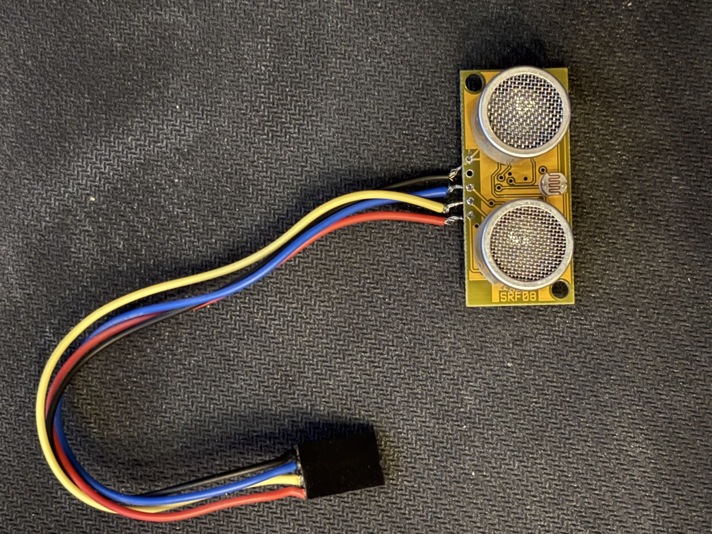

Devantech SRF08 ultrasonic rangefinder
retired×1Yellow board silkscreened SRF08 beside the left transducer — a
Devantech SRF08, from the same Attleborough outfit (trading as Robot Electronics) that
made the MD22 (D1) and the CM02 radio (R1),
so it's almost certainly out of the same old-robot stash. It ranges with
ultrasound, not UV: two 40 kHz transducers, one transmitting and
one listening. The small orange disc between them is a light-dependent resistor —
the SRF08's onboard light sensor, which is the one thing on this board that does care
about light.
- Interface is I²C, 5 V. Default address
0xE0, changeable to any of 16 (0xE0–0xFE, even values); every unit also answers the broadcast address0x00. It could share a bus with the MD22, which is also I²C. - Range: roughly 3 cm to 6 m. The ranging window is set by the range
register —
(n × 43 mm) + 43 mm— and defaults to a 65 ms listen, i.e. everything out to about 11 m of flight time. Shorten it and you both cut spurious far echoes and get a faster update rate. - Registers, write side:
0= command (0x50inches,0x51cm,0x52µs),1= max analogue gain (0–31),2= range. Read side:0= software revision,1= light level,2–35= echo results as high/low byte pairs. - No I²C pull-ups are fitted on the board (measured 2026-09-20, module disconnected and unpowered: +5 V to SDA about 1.5–2 MΩ, +5 V to SCL about 600 kΩ — both leakage through the PIC, not resistors). So the bus idles at whatever voltage our pull-ups go to, and a 3.3 V controller can be wired straight to it without over-volting its pins. Whether the SRF08 then reads 3.3 V as a logic high is a separate question — its PIC wants 3.5 V.
- Up to 17 echoes per ping, not just the nearest — you can see past a near obstacle to what's behind it, which the cheap HC-SR04-class modules can't do.
- Light level comes free with every ranging: about 2–3 in the dark, up to ~248 in bright light. Cheap ambient-light input for the robot with no extra part.
- Current: ~12 mA while ranging, ~3 mA standby, with brief peaks around 275 mA a few microseconds long. Give it local decoupling and don't feed it through a long thin wire.
- The 5-way connector is documented as
1 = +5V,2 = SDA,3 = SCL,4 = do not connect(the PIC's MCLR line),5 = 0V. Our harness has four wires hand-soldered to the pads — red, yellow, blue, black — with the fourth position deliberately left empty, which lines up with that pinout exactly (red = +5V, yellow = SDA, blue = SCL, black = 0V). Ring it out anyway before powering. The free end is a 4-way 0.1" DuPont housing. - Back face: Microchip
PIC16F872in SOIC-28 (lot codeG4189SEP) doing all the work, an STST232C(16-pin TSSOP, a MAX232 equivalent) driving the transducer — its charge pump swings the transmitter well past the 5 V rail, and the PIC gates its supply so it only draws current during a ranging, a can crystal marked8000M(8 MHz), a red status LED by the header, and discrete SMD passives for the receive amplifier chain. Two mounting holes on the diagonal corners.
Bench-tested 2026-09-20 against a XIAO ESP32-C5, using
esp32-c5/srf08_range. The ultrasonic ranging is dead; everything
else on the board works. Retired: don't design around it, but it is still a
perfectly good I²C target and ambient-light sensor for bench work.
- Working: answers at the factory address
0xE0(never readdressed), reports software revision6, and the light sensor tracks the room (38–183 across a session). Hundreds of I²C transactions with no errors. - Working at 3.3 V logic, with 4.7 kΩ pull-ups to
3.3 V and no level shifter, despite its PIC wanting
0.7 × VDDfor a logic high. Marginal on paper, solid in practice on this unit. - Dead: every echo register reads zero on every ping — at
every gain
0–31, every range setting including the power-on defaults, against bare concrete at 1.5 m, a flat target at 30 cm, and keys jingled at close range (broadband 40 kHz noise that a working receiver picks up easily). - Fault isolated to the receive amplifier chain, between the
receive transducer and the PIC. Everything upstream was eliminated: the
ST232C's gated supply behaves correctly (0 V idle, pulsing for ~6 ms per ranging, matching the configured listening window); its charge pump reaches its rails (V− averages −5 V while ranging, then decays on its reservoir cap); the transmit transducer is wired toST232Cpins 7 and 14 and audibly clicks on every ping; and the receive transducer element itself measures healthy at 4.3 nF with infinite DC resistance. - Taking it further would need a scope on the analogue receive stages, and Devantech never published a schematic. Not worth it for a 2004 board.
- In-circuit measuring trap, for next time: the transmit transducer reads
~220 Ω and 0 nF because the
ST232C's output stage sits across it. That looks exactly like a shorted transducer and isn't one.
{kind=link}

SRF08 silkscreen, and the LDR light sensor between them.{kind=link}

{kind=link}
